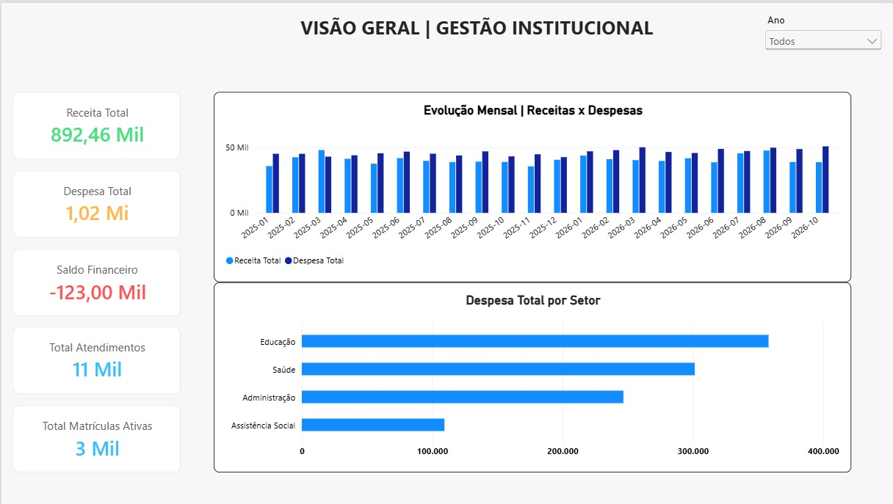
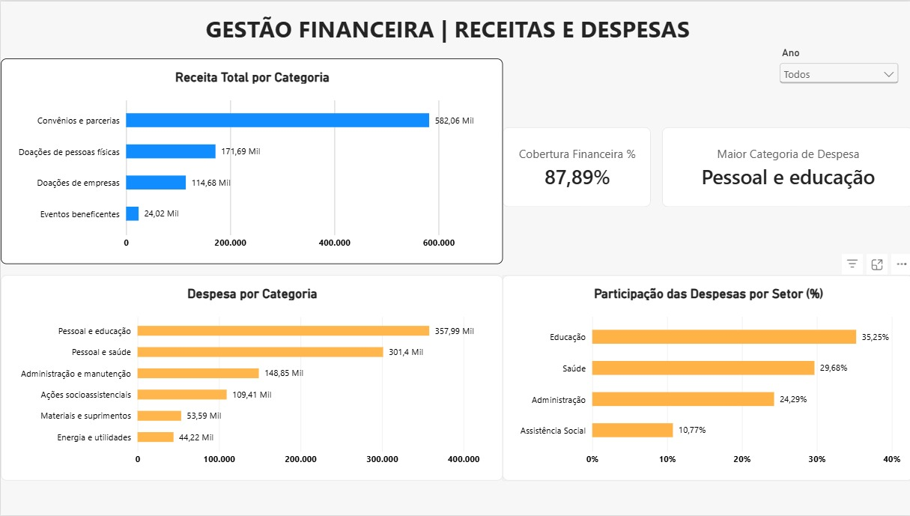
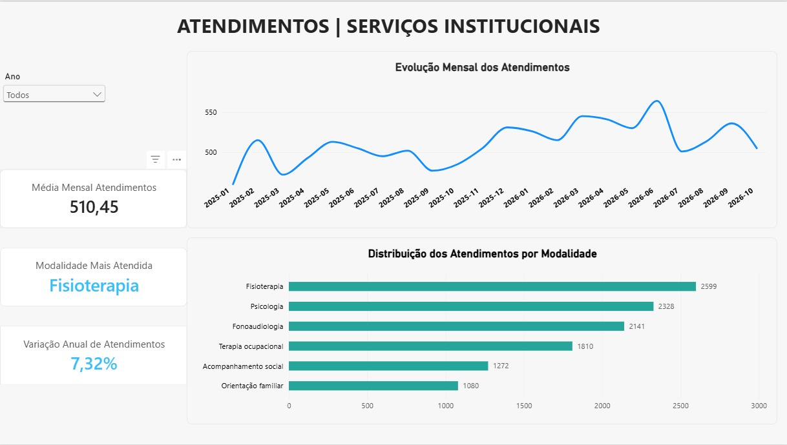
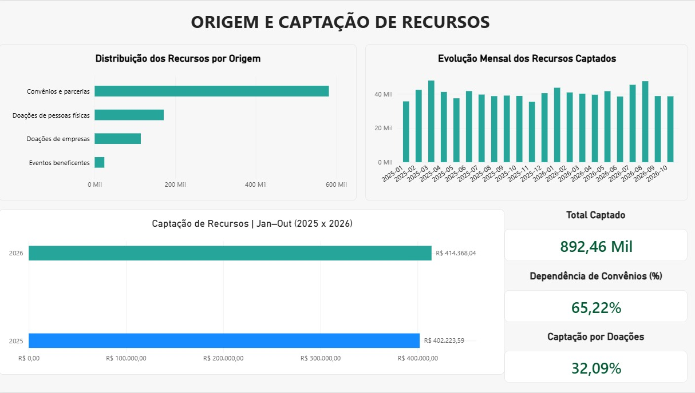
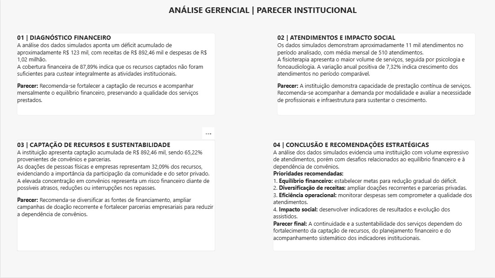

Visão Geral do Projeto
Projeto demonstrativo desenvolvido em Power BI, com dados inteiramente simulados, para apresentar indicadores de gestão financeira, atendimentos, serviços institucionais e captação de recursos de uma instituição do terceiro setor.
O dashboard possui cinco páginas interativas, incluindo visão geral, gestão financeira, atendimentos e serviços, origem e captação de recursos e análise gerencial. O objetivo é apoiar a tomada de decisões por meio de indicadores, análises comparativas e recomendações estratégicas.
Dados fictícios utilizados para fins de portfólio.
Galeria do Dashboard




